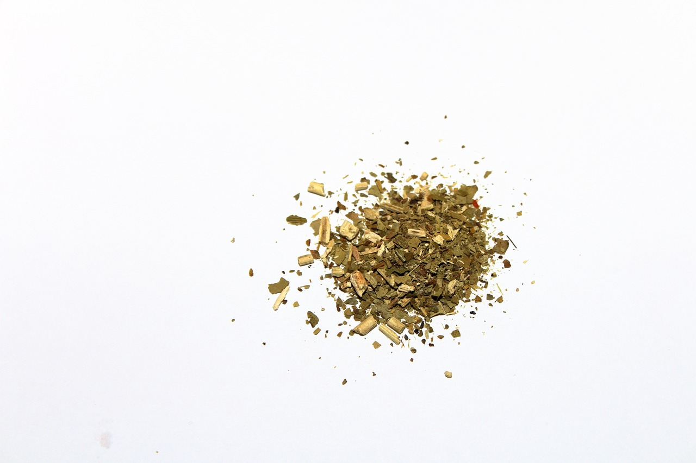
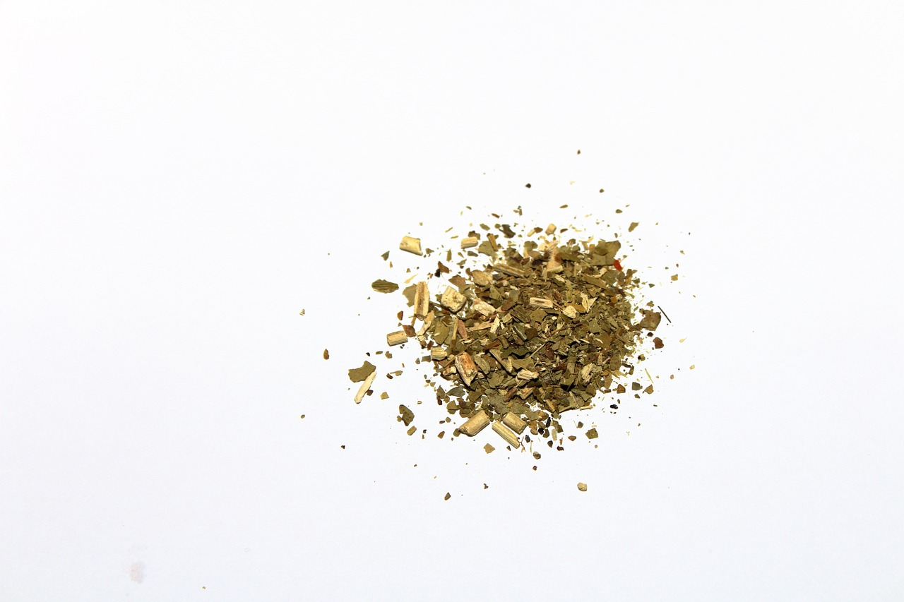

are you like this guy?...
Then we got you!
 

The overall health benefits of Matcha and Yerba Mate are greater, and they also present less risks for adverse effects. They benefit you in a variety of ways and are easier on the body. Matcha and Yerba Mate are the best options if you want to get your caffeine fix without any of the downsides of coffee. Matcha and Yerba Mate are the way to go.